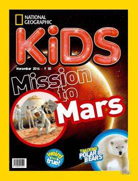
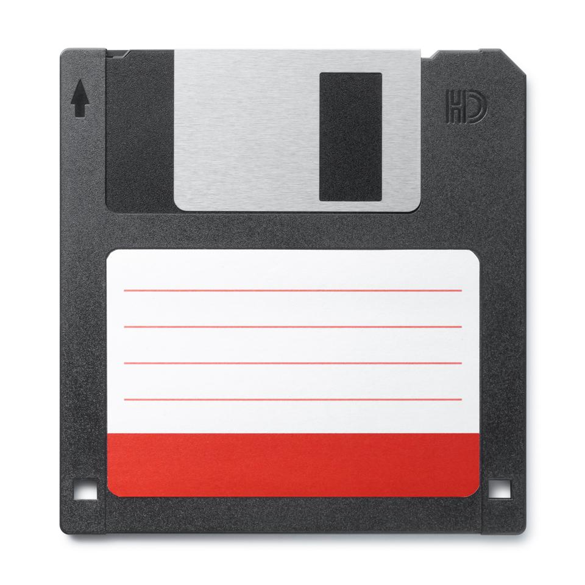

What did your childhood look like?
As a kid I was the human equivalent of Curious George.
What ever I got my hands on my mind just wanted to know 'how does this thing work?'.
I would take things apart and put them back together, I was doing a nice amount of reading,
you could usually find me with a national geographic magazine or something science related.
My mom and grandparents saw my intrest in the world and how it worked early on. My mother
studied engineering and my grandfather was a chemist. The household I grew up in, I feel like gave me a
head start on others around my age. Not only was I physically performing better but mentally I was ahead as well.
Walking and reading at an early age I had a thing for getting into things and having to think my way out of them.

Where did you intrest in technology stem from?
My Grandparents. They were the ones how looked after me the first few years I was new to this Earth.
My maternal grandmother put me around computers and different devices. My grandfather should me lab tech.
Between them both I was exposed to new worlds to explore. I found myself most happy when I wandered around
the realm of computers with my granny or conducting a science experiment or build with my grandpa.

I think this road will lead me to a future that I've dreamt of for a while.
I believe that once my foundation is laid in the world of tech I'll become synonymous with development.
taking the app to new level. Changinging the way we use look at and use the internet. Also I have other goals
I want to achieve and my career in tech would help supplement those. This road will lead me to location independent
work, and the beginning of my financial independence. The Road to Code will lead me to a brighter future.
 ®
®